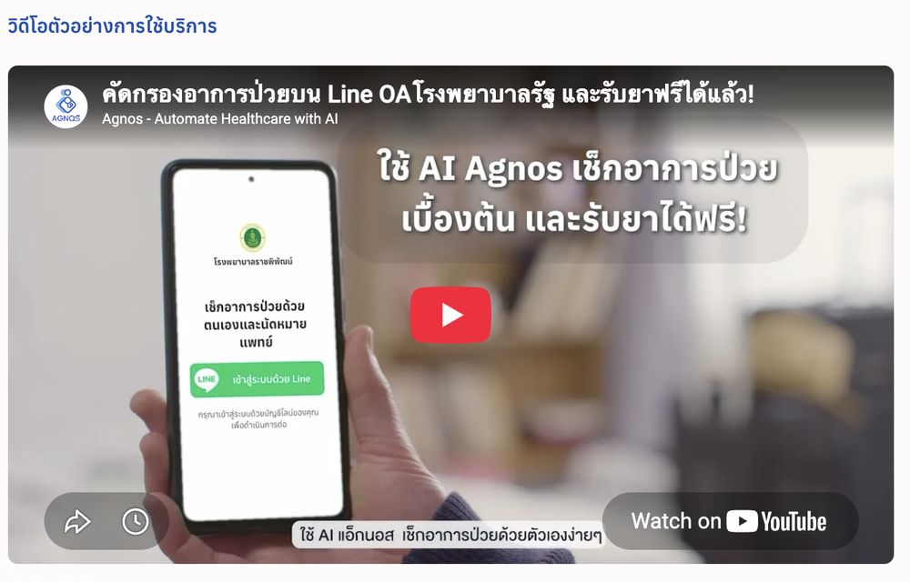

03 / 04
จากพาร์ทเนอร์ภาครัฐ
สู่ผู้ใช้งานหลักหมื่นบน LINE OA
Agnos Health · B2C Platform Growth · LINE OA

วิดีโอสาธิตการใช้งาน — คัดกรองอาการบน LINE OA โดยไม่ต้องดาวน์โหลดแอป
RolePR & Earned Media · Landing Page Design · LINE OA Journey · KOL Sourcing
พาร์ทเนอร์กรมสุขภาพจิต × หมอพร้อม (2022) · สำนักการแพทย์ กทม. × UMSC × พฤกษา (2024)
ช่วงเวลา2022 → ปัจจุบัน
บทบาทและความเป็นเจ้าของงาน
- ออกแบบเส้นทางประสบการณ์ผู้ใช้ (LINE OA User Journey) ร่วมกับทีม ตั้งแต่การแอดเพื่อนครั้งแรกจนถึงการรับผลวิเคราะห์จาก AI
- เขียนบทความประชาสัมพันธ์และ PR Articles ทั้งหมดด้วยตนเอง ทั้งโครงการ DMIND × หมอพร้อม (2022) และโครงการคัดกรองอาการด้วย AI ร่วมกับ กทม./UMSC (2024)
- ออกแบบหน้า Landing Page เพื่อโปรโมตแต่ละแคมเปญ
- คัดเลือกและบริหารจัดการ KOLs/Influencers ด้วยตนเองเพื่อกระจายข่าวแคมเปญปี 2024
- ประสานงานสื่อมวลชน (Press Outreach) จนเกิด Earned Media ข้ามหลายสำนักข่าวสำหรับทั้งสองแคมเปญ
โจทย์
Agnos ตัดสินใจย้ายจุดให้บริการหลักจากแอปพลิเคชันมาสู่ LINE OA เพื่อตัดความซับซ้อนและลด UX Friction —
ไม่ต้องดาวน์โหลดแอป ไม่ต้องล็อกอินซ้ำซาก แต่การย้ายช่องทางเพียงอย่างเดียวไม่ได้ทำให้ผู้คนแห่กันเข้ามาใช้งาน
โดยเฉพาะเมื่อเป็นสตาร์ทอัพขนาดเล็กที่ไม่มีงบโฆษณาระดับประเทศ
โจทย์หินคือ: ทำอย่างไรถึงจะดึงดูดผู้ใช้งานชาวไทยจำนวนมากให้รู้จักและแอด LINE OA เข้ามาใช้งาน
โดยเกือบจะไม่มีงบซื้อสื่อเลยแม้แต่น้อย?
แนวทาง
แทนที่จะพึ่งพางบโฆษณาแบบเดิมๆ ฉันเลือกใช้ การสร้างพาร์ทเนอร์ชิปกับภาครัฐ (Government Partnerships)
และสื่อ Earned Media เพื่อเข้าถึงกลุ่มเป้าหมายในสเกลระดับชาติ
เหตุผลเบื้องหลัง: ในตลาด HealthTech การสร้างความเชื่อใจสำคัญที่สุด การพยายามยิงแอดหาผู้บริโภคทั่วไปด้วยงบน้อยย่อมสู้คู่แข่งทุนหนาไม่ได้
ทางออกที่ฉลาดกว่าคือการ "เกาะไปกับระบบนิเวศและความน่าเชื่อถือที่มีอยู่แล้วของรัฐ" (เช่น หมอพร้อม หรือ กทม.)
การผูกแบรนด์เข้ากับโครงการระดับชาติไม่เพียงประหยัดงบ แต่ยังสร้างความน่าเชื่อถือทันทีในสายตาประชาชน
ทำให้เกิดการเติบโตแบบก้าวกระโดดอย่างยั่งยืน
สิ่งที่สร้างขึ้น
01 Simplified LINE OA User Journey
ร่วมกับทีมออกแบบ Flow การใช้งานบน LINE OA ให้สั้นและไร้รอยต่อที่สุด ตั้งแต่กดแอดเพื่อนครั้งแรกไปจนถึงการเข้าถึงระบบ AI คัดกรองอาการ เพื่อลดอัตราการหลุดออก (Drop-off Rate)
02 Narrative & PR Content Engine
เขียนบทความประกาศและ PR ทุกชิ้นด้วยตนเอง เพื่ออธิบายโครงการสุขภาพที่ซับซ้อนให้ออกมาเป็นภาษาที่ประชาชนทั่วไปเข้าใจและอยากแชร์ต่อ (เช่น โครงการ DMIND สุขภาพจิต และ AI คัดกรองอาการร่วมกับ กทม.)
03 Campaign Landing Page & UX Design
ออกแบบหน้า Landing Page เฉพาะกิจสำหรับแต่ละแคมเปญ เพื่อรองรับทราฟฟิกมหาศาลจากภาครัฐและสื่อ ให้เปลี่ยนมาเป็นเพื่อนใน LINE OA ได้ทันที
04 Strategic KOL & Press Orchestration
คัดเลือกและบรีฟ KOLs/Influencers สายสุขภาพเพื่อกระตุ้นการรับรู้ในแคมเปญปี 2024 พร้อมควบคุมการกระจายข่าวไปยังสื่อมวลชนจนเกิดกระแส Earned Media บนสำนักข่าวชั้นนำหลายแห่ง
ผลลัพธ์และตัวเลขจริงจากระบบ
การเติบโตของเพื่อนใน LINE OA สอดคล้องกับแคมเปญที่ขับเคลื่อนอย่างแม่นยำ ไม่ใช่การเติบโตแบบบังเอิญ:
บทสรุปภาพรวม
โปรเจกต์นี้เป็นหลักฐานเชิงประจักษ์ว่า การทำตลาดโดยแทบไม่มีงบโฆษณา ก็ยังสร้างตัวเลขในสเกลระดับชาติได้
หากเลือกช่องทางที่ถูกต้อง (เลือก LINE OA แทนการบังคับโหลดแอป) และใช้พาร์ทเนอร์ภาครัฐ Earned Media และ KOLs ขับเคลื่อนอย่างมีกลยุทธ์
บทเรียนที่ติดตัวจากเคสนี้: สตาร์ทอัพที่งบน้อยไม่ได้แข่งกันที่ว่าใครยิงแอดเก่งกว่า
แต่แข่งกันที่ว่าใครมองเห็นความน่าเชื่อถือที่มีอยู่แล้วในระบบ แล้วเข้าไปเป็นส่วนหนึ่งของมันได้ก่อน
สิ่งที่ได้เรียนรู้
- Channel Friction กำหนดการ Adoption: การเลือกช่องทางที่คนคุ้นเคย (LINE OA) ลดอุปสรรคในการเข้าใช้งานได้ดีกว่าการบังคับให้โหลดแอปใหม่
- พาร์ทเนอร์ภาครัฐสเกล Trust ได้ทันที: การร่วมมือกับภาครัฐไม่ใช่แค่ PR แต่เป็นการยืมความน่าเชื่อถือระดับชาติมาขับเคลื่อนการเติบโตของสตาร์ทอัพ
- Earned Media ชนะ Paid Ads ในธุรกิจสุขภาพ: ข่าวสารที่บอกเล่าผ่านสื่อและผู้เชี่ยวชาญสร้างความน่าเชื่อถือและดึงผู้ใช้ได้ทรงพลังกว่าการยิงแอดทั่วไป
03 / 04
From Government Partnerships
to Tens of Thousands on LINE OA
Agnos Health · B2C Platform Growth · LINE OA
Service demo — symptom screening on LINE OA, with no app download
RolePR & Earned Media · Landing Page Design · LINE OA Journey · KOL Sourcing
PartnersDept. of Mental Health × Mor Prom (2022) · BMA Medical Service Dept. × UMSC × Pruksa (2024)
Period2022 → present
Role & Ownership
- Designed the LINE OA user journey with the team, from first add-friend to receiving the AI analysis
- Wrote every announcement and PR article myself — for both the DMIND × Mor Prom project (2022) and the AI symptom-screening project with the BMA/UMSC (2024)
- Designed the landing pages that promoted each campaign
- Sourced and managed KOLs/influencers myself to spread the 2024 campaign
- Ran press outreach that earned media coverage across multiple outlets for both campaigns
Challenge
Agnos decided to move its main service point from the app to LINE OA to cut complexity and UX friction — no app
download, no repeated logins. But changing the channel alone didn't bring people in, especially for a small startup
with no national ad budget.
The hard question: how do you draw a large number of Thai users to discover and add the LINE OA, with almost no media budget at all?
Approach
Instead of leaning on a conventional ad budget, I chose government partnerships and earned media to reach a national-scale audience.
The reasoning: in HealthTech, trust matters most. Trying to run ads to general consumers on a small budget can't beat
well-funded competitors. The smarter move is to "ride the existing ecosystem and credibility of the state" (like Mor Prom
or the BMA). Tying the brand to national programs isn't just budget-efficient — it lends instant public credibility, producing durable, step-change growth.
What I Built
01 Simplified LINE OA User Journey
Worked with the team to make the LINE OA flow as short and seamless as possible — from the first add-friend to reaching the AI symptom screener — to cut the drop-off rate.
02 Narrative & PR Content Engine
Wrote every announcement and PR piece myself, explaining complex health programs in language ordinary people understand and want to share (like the DMIND mental-health project and the AI screening with the BMA).
03 Campaign Landing Page & UX Design
Designed dedicated landing pages for each campaign to absorb the massive traffic from government and press, converting it into LINE OA friends on the spot.
04 Strategic KOL & Press Orchestration
Selected and briefed health KOLs/influencers to drive awareness for the 2024 campaign, and steered press outreach into earned media across several leading outlets.
Impact & Real Platform Numbers
LINE OA friend growth tracked precisely with the campaigns I drove — not accidental growth:
Outcome
This is hard evidence that marketing with almost no ad budget can still produce national-scale numbers — if you pick
the right channel (LINE OA over a forced app download) and drive it strategically with government partners, earned media, and KOLs.
The lesson that stuck: a startup without budget doesn't win by buying media better — it wins by spotting
credibility that already exists in the system and becoming part of it first.
Key Learnings
- Channel friction determines adoption: picking a familiar channel (LINE OA) lowers the barrier to entry better than forcing users to download a new app.
- Government partnerships scale trust instantly: partnering with the state isn't just PR — it borrows national credibility to drive a startup's growth.
- Earned media beats paid ads in healthcare: stories told through media and experts build credibility and pull users more powerfully than commercial ad buys.